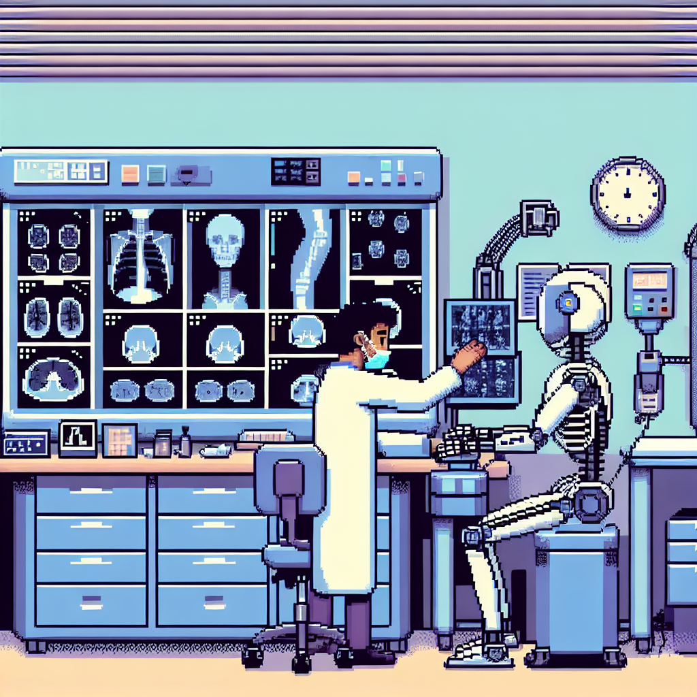

Why AI will never replace the radiologist
In recent years, there has been a growing buzz around the use of artificial intelligence (AI) in various fields, including radiology. The idea of machines being able to analyze medical images and diagnose diseases sounds promising, but I believe that AI will never fully replace the radiologist.
One of the main reasons for this is the complexity of radiology itself. Radiologists are not just experts in reading images; they also possess a deep understanding of anatomy, physiology, and pathology. This knowledge allows them to interpret images in the context of a patient's medical history and symptoms. AI, on the other hand, relies solely on patterns and algorithms. While it can be trained to recognize certain patterns, it lacks the ability to understand the nuances and complexities of a patient's condition.
Another important factor is the potential for errors in AI algorithms. Machine learning models are only as good as the data they are trained on. If the training data is biased or incomplete, the AI system will likely make inaccurate or biased predictions. This is a significant concern in the field of radiology, where misdiagnoses can have serious consequences for patients.
Additionally, the legal and ethical implications of relying solely on AI in radiology must be considered. Who would be held accountable if a patient is misdiagnosed or if an AI system makes a mistake? Radiologists are trained professionals who can be held accountable for their actions. AI systems, on the other hand, are developed and maintained by teams of engineers and data scientists. Determining liability and responsibility in such cases can be complex.
Furthermore, the human element cannot be overlooked. Radiologists not only interpret images but also communicate with patients and other healthcare professionals. They provide valuable insights and recommendations based on their expertise. AI systems, on the other hand, lack the ability to interact and empathize with patients, which is crucial in providing holistic care.
In conclusion, while AI has the potential to assist radiologists in their work, I believe that it will never fully replace them. The complexity of radiology, the potential for errors in AI algorithms, as well as legal and ethical considerations, all contribute to the limitations of AI in this field. Radiologists bring a unique set of skills and expertise that cannot be replicated by machines.